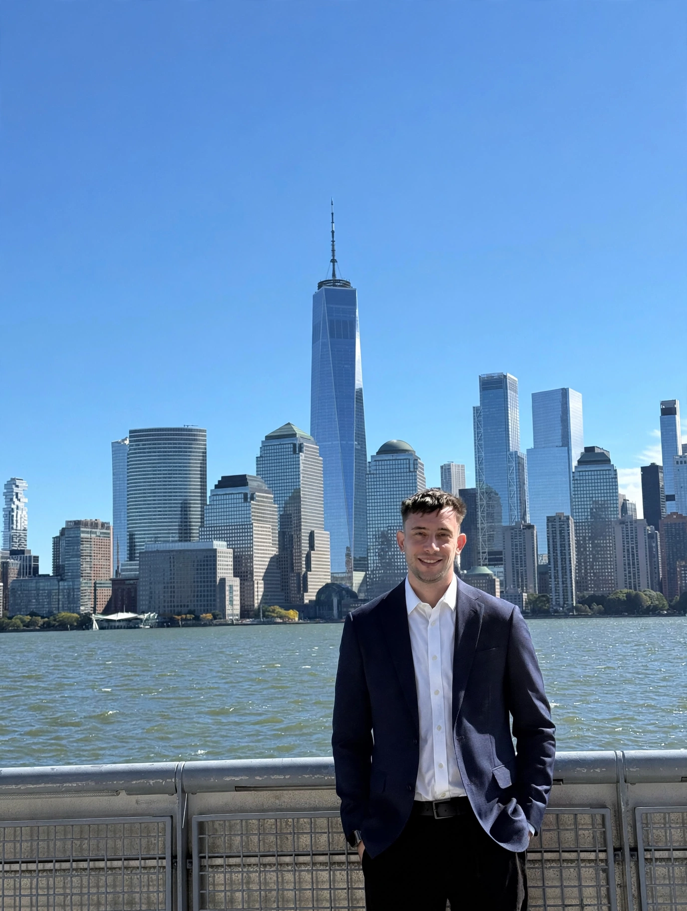

Stanford Intersect · 2025
Meet the Founder
Paper Mentor AI was created to give ambitious students access to technically grounded, personalized research mentorship.

Odysseas Drosis
Founder & Lead Mentor · Machine Learning Engineer at Meta · Cornell University
Odysseas is a machine-learning engineer and experienced
research mentor who has guided students through AI research
across healthcare, finance, sports analytics, computer vision,
natural language processing, and other applied machine-learning
domains.
Students he has personally mentored have completed full
research projects and published work in research journals
and student research publications.
Paper Mentor AI brings this research-first approach into a
dedicated 1:1 mentorship experience, helping students move
from an initial idea to a technically rigorous and clearly
communicated research project.
Meta, Cornell University, Stanford University, and other institutions referenced on this website do not sponsor, endorse, or operate Paper Mentor AI. Institutional names are included only to describe individual professional, educational, or publication backgrounds.
Published Student Research
Students personally mentored by founder Odysseas Drosis have produced published research across healthcare AI, financial forecasting, sports analytics, and other machine-learning areas.
Journal of Emerging Investigators · 2025
The Utilization of Artificial Intelligence in Enabling the Early Detection of Brain Tumors
Read publication
Journal of Emerging Investigators · 2024
Exploring the Effects of Diverse Historical Stock Price Data on the Accuracy of Stock Price Prediction Models
Read publication
National High School Journal of Science · 2025
Leveraging Machine Learning for Predicting NBA Player Performance
Read publicationThese examples reflect students previously and personally mentored by the founder. Publication outcomes depend on the individual project, student work, journal requirements, and independent editorial decisions and are not guaranteed.
Why Students Work with Paper Mentor AI
The goal is not simply to finish a coding project. Students learn how to think, experiment, evaluate, and communicate like researchers.
- Personalized 1:1 research mentorship.
- Research topics tailored to the student's interests and technical experience.
- Hands-on implementation of real machine-learning models.
- Guidance on literature review, methodology, experimentation, and evaluation.
- Structured support for research writing and revision.
- Guidance on identifying appropriate journals, competitions, and research opportunities.
Example Research Areas
Students can explore a wide range of applied AI topics while keeping the research question focused and achievable.
- AI for medical diagnosis and healthcare.
- Financial forecasting and quantitative modelling.
- Sports analytics and player-performance prediction.
- Natural language processing and sentiment analysis.
- Computer vision and image classification.
- Climate and environmental modelling.
- Fraud, misinformation, and anomaly detection.
- Recommendation systems and personalization.
Ready to Start an AI Research Project?
Tell us about your interests, experience, and goals. We will review your application and determine what type of research project could be a strong fit.
Apply for Mentorship